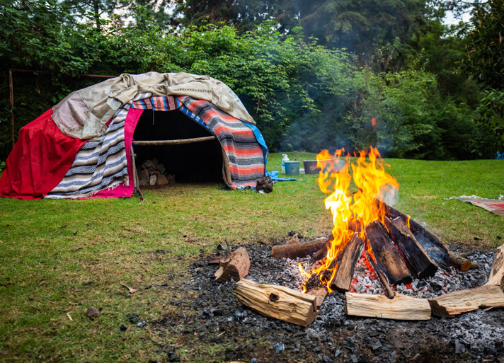

The Inipi Ceremony
Many indigenous people practice what is commonly referred to as a "sweatlodge" ceremony. This is the Lakotas understanding of what is actually The Inipi (or, as White man calls it, "sweatlodge"). It is a very important part of Lakota spirituality and culture. It is one of the 7 rites of passage of the Lakota Sioux. Inipi is done inside a lodge made of willow branches that are placed in the ground, forming a circle. The branches are bent toward the center of the circle and are tied together, forming a dome-shape lodge that is about waist high. It can be built to fit as many people as required for the ceremony. Buffalo robes are placed over the branches, leaving a small hole for an entrance.
Some lodges have their entrance facing east, others west, depending on the vision of a medicine man. Sage is placed on the floor of the lodge so that those participating may smudge themselves. Rocks, wood and water are gathered. Wood is placed in a very specific manner around and between the rocks, allowing effective heating. The firekeeper is designated and is responsible for heating the rocks and bringing them into the lodge.
The doorkeeper opens and closes the lodge from outside when he hears someone say "Mitakuye Oyas'in" during the ceremony. "Mitakuye Oyas'in" means All my relations (are in harmony). The opening of the door ends the round. Prayers and songs are sung, after which the water is put on the rocks, creating steam and a rise in temperature. More songs are sung before the medicine person (or ceremony leader)'s assistant begins to pray. When he is finished, the man next to him prays, and this continues in a clockwise manner. Once it gets too hot for any participant, he may say "Mitakuye Oyas'in" out loud, and the doorkeeper will open the door.
The ceremony is not a competitive one, and one does not receive more blessings for taking more heat than what he can stand. At the end, the leader exists first, followed by the men and ending with the assistant, in a clockwise manner. People like to cool off after the ceremony, and some jump in a lake or snow, or simply pour water on themselves. This ceremony may serve several purposes such as healing (in which a medicine person would be required), or to assist one in tapping into the Creator which dwells within each of us, or for several other purposes.
Meaning and Symbolism
The Inipi Ceremony is a re-enactment of the Lakota creation story. It is a birth, and when one finishes a ceremony, he feels "like new" and like he is "floating". "Sometimes during this ceremony, spirits may enter and sing along with the participants and will even talk to them, as well. If a person is not ready to hear the spirits, the spirits may not let that person hear them. Only those who are ready to hear the spirits may hear them because that is how compassionate the spirits are," David Little Elk explained. The songs sung in the Inipi Ceremony are only to be sung during ceremony, as they invoke spiritual helpers. Singing the songs outside of the ceremony will cause the Natural Law of Generosity to be invoked, which states that the energy a person uses will return to him or her fourfold, and the person will be giving himself unhealthy medicine.
The medicine person (needed only for healing Inipis) or ceremony leader enters the lodge first. He crawls into the lodge and then around in a clockwise direction until he sits at the right of the entrance, as viewed from outside. Others crawl inside and find their place in the same manner. The last person to enter is the leader's assistant, and sits to the left of the entrance. The firekeeper brings in the heated rocks on deer antlers, and they are placed in the center of a pit inside the lodge. A bucket of water is brought in, and the entrance is closed. With the help of Medicine Men and Women, they could repair the damage done to their spirits, their minds and their bodies. The Sweat Lodge is a place of spiritual refuge and mental and physical healing, a place to get answers and guidance by asking spiritual entities, totem helpers, the Creator and Mother Earth for the needed wisdom and power.
In many traditions the entrance to the sweat lodge faces to the East and the sacred fire pit. This has very significant spiritual value. Each new day for all begins in the East with the rising of Father Sun, the source of life and power, dawn of wisdom, while the fire heating the rocks is the undying light of the world, eternity, and it is a new spiritual beginning day that we seek in the sweat ceremony. Between the entrance to the lodge and the sacred fire pit, where the stones are heated, is an altar barrier, beyond which none may pass except the lodge or fire keepers, to prevent participants from accidently falling into the fire as they emerge from sweat. Traditionally this barrier altar is a buffalo or other skull atop a post, placed about 3 paces from the entrance and 3 paces from the fire, to warn of the danger. At the base of the post is a small raised earthen altar upon which are placed items sacred to the group or clan, sage, sweetgrass, feathers, etc., bordered with the four colors, and a pipe rack for the chanunpa.
Common to all traditions, and the sweat, is the ideal of spiritual cleanliness. Many sweats start with the participants fasting for an entire day of contemplation in preparation for the sweat while avoiding caffeine, alcohol and other unhealthy substances. Prior to entering the sweat the participants usually smudge with sage, sweetgrass or cedar smoke as a means toward ritual cleanliness.
Tradition
A Sweat Ceremony in many traditions usually starts with the loading and offering of the sacred chanunpa ~ "peace pipe" ~ in prayer, that the participants may know and speak the truth in their supplications of Grandfather, Earth Mother and the spirits. In other traditions, when you are called upon to go into the sweat lodge you will have some tobacco to offer to the sacred fire, saying a prayer or asking a question, the smoke from the tobacco carrying your request to the Great Spirit.
As you prepare to enter the lodge the sweat leader smudges you with the smoke of burning sage, cedar, or sweetgrass, wafting the smoke over you with an eagle feather. You then crawl into the lodge in a sun-wise (clockwise) direction, bowing in humility to Great Spirit and in close contact with Earth Mother, and take your place in the circle, sitting crosslegged upright against the wall of the lodge.When all are inside the sweat leader calls upon the doorkeeper to drop the flap covering the lodge opening. The lodge becomes dark, and at this point the lodge leader announces that all are free to leave the lodge at any time if they cannot endure. (If you must leave, speak out "Mitakuye Oyasin," "All my relatives." The other participants will move away from the wall so that you may pass behind them as you leave in a clockwise direction.) He then asks for a short, contemplative silence. After the brief silence the flap is raised, and the leader calls upon the fire tender to bring in the heated stones from the sacred fire.
The Stone People spirits are awakened in the stones by heating them in the sacred fire until red-hot. They are swept clean with a pine or cedar bough to remove smoking embers which would cause irritating discomfort in the lodge. One at a time they are placed in the shallow pit inside the sweat lodge, placing first the stone on the west, then north, east, south, and in the center to Grandfather. Additional stones are then placed to Grandmother and The People. After four to seven stones are in the pit, depending on tradition (and probably the size of the stones), the entrance is closed and sealed by the Sweat Lodge Keeper, who generally is also the fire tender.
Glowing with the luminance of the red hot stones, the ceremony begins in the lodge. The sweat leader sounds the Water Drum and calls forth the spirit guides in prayer from the Four Directions. The sweat leader then dips water and pours it onto the hot stones in the pit, producing large amounts of steam, usually one dipper for each \of the four directions, or until he is told by the spirits to stop. Then he begins his prayers, songs and chants. During the purification of one's spirit inside a sweat lodge, all sense of race, color and religion is set aside. As in the Mother's womb and the Father's eyes, we are all the same, we are One. Each of us has the ability to sit with the Creator himself. Healing begins here for dis-ease, physical, emotional, directional and spiritual.
As the steam and temperature rises so do our senses. Messages and vision from the Spirit World are received through the group consciousness of the participants. One at a time, as a talking stick is passed, all the people inside get an opportunity to speak, to pray and to ask for guidance and forgiveness from the Creator and the people they have hurt. As they go around the circle, they tell who they are, where they are from, and what is their clan, so the Creator, the Spirit People, and all there can acknowledge them.
A sweat is typically four sessions, called rounds, each lasting about 30 to 45 minutes. The round ends when the leader announces the opening of the door.
The first round is for recognition of the spirit world which resides in the black West where the sun goes down, and the Creator may be asked for a "spirit guide" by some of the participants. The second round is for recognition of courage, endurance, strength, cleanliness, and honesty, calling upon the power of the white North. The recognition of knowledge and individual prayer symbolize the third round, praying to the direction of the daybreak star and the rising sun that we may gain wisdom, that we may follow the Red Road of the East in all our endeavors.The fourth endurance (South) centers on healing for ones self or others. Prayers to thank the Creator are said and then the door is opened and all leave.
The yellow South stands for growth and healing. Thus, the last round centers on spiritual growth and healing. From our spirit guides from the west, from the courage, honesty and endurance of the north, from the knowledge and wisdom obtained from the east, we continue the circle to the south from which comes growth. It is from growth and maturing that healing comes. At the completion of each round, the participants may emerge, if desired, to plunge into an adjacent pool or stream if one is available, or roll in the snow if the sweat is held in winter. In arid areas the participants roll in the sand to cool off and remove the sweat. Many participants maintain their places in the lodge until completion of the fourth round, while the cooled stones in the pit are removed and replaced with hot stones.
There are many different forms of sweat ceremonies in Indian country. Each people has their own tradition and this is especially clear when it comes to the sweat lodge ceremony. Many differences, depending on the people participating, occur during each ritual. For instance, many times rounds are held in complete silence and meditation as the participants feel the need. At other less intense times, a round may be devoted to story telling and recounting of the clan's creation stories. This is all part of spiritual and emotional healing and growth. Respect, sincerity, humility, the ability to listen and slow down are all key in the way you approach ceremony.
Who Sweats and Why?
The sweat lodge ceremony usually occurs before and after other major rituals like the "Vision Quest" for example. The aim of the ceremony is to purify one's mind, body, spirit and heart. It is also a "stand alone" ritual that it occurs whenever it is \needed. Sweat lodge essentially translates into returning to the womb and the innocence of childhood. The lodge is dark, moist, hot and safe. The darkness relates to human ignorance before the spiritual world and so much of the physical world. Traditionally it was only the men who would sweat. As time has passed and the lodge has evolved, other levels have been shown. The sweat lodge has given many gifts and shown itself as a way to not only cleanse, but to release anger, guilt and shame in a safe way, and to bring people together as ONE. These days women sweat also, provided they are not on their moon time or cleansing time already. Men can sweat separately and women can sweat separately, or there can be mixed sweats where men and women both participate. The Elder or Lodge Keeper running the ceremony according to their teachings will determine this. Observing very strict protocols while in ceremony are key. Men and women must both practice modesty in their dress when they come to ceremony. Sweat lodge is not a fashion show, nor is it a place for vanity or to get a date. This is a sacred place to pray, meditate, learn and heal, and that must be the focus.
The First Inipi
There are many stories that one can find about the very first Inipi, but one should be very guarded with their trust of the authenticity of these stories. David Little Elk was kind enough to share these authentic stories of the first Inipis with us. Long ago, Unk, who lives in the waters and represents contention, made many kinds of Mni Watu (micro-organisms) that made many of the first Lakota people (Ikce Oyate) very sick after drinking water. The first Lakota man, Tokahe, did a Hanbleciya ceremony (a cry for vision), and he received instructions on how to deal with the problem. Tokahe taught the others how to use plants to cure the sick and which songs to sing to help the plants do their work, creating the first medicine people (which are different than holy people).
Tokahe also made a small dome-shaped lodge and covered it with buffalo robes. Previously heated rocks were placed in the center, and a sick person was brought inside. The door was shut, and Tokahe prayed and sang to the Wakan Tanka while he dripped water on the hot rocks, creating steam which purified everything inside the lodge. Tokahe would open the entrance for a time, and resume his practice. He did this four times, after which the person was cured, and the Inipi ceremony was created. Tokahe declared that the ceremony was meant to cleanse the mind, heart, soul and body. We must always walk the Red Road in a way that honors others' views and teachings without sacrificing our own. All of these ways are good, none is better or worse than the other.